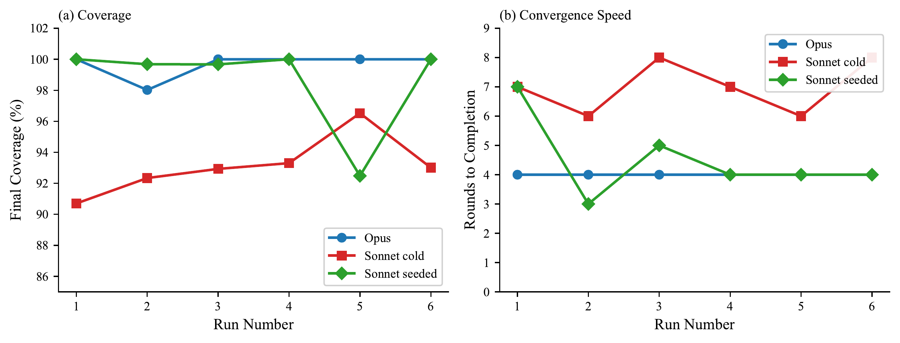
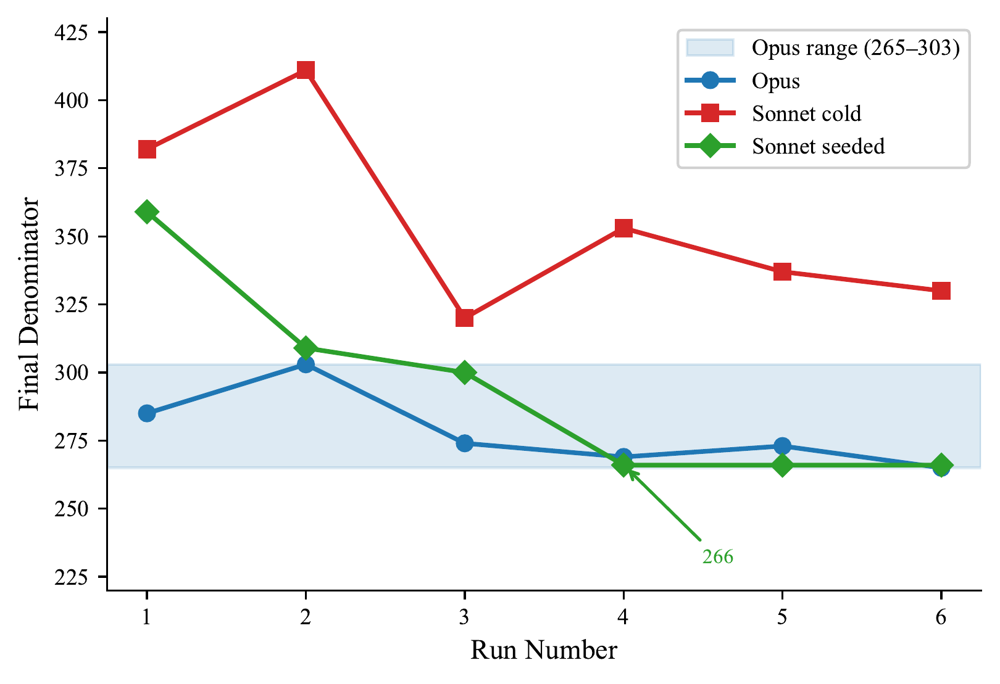
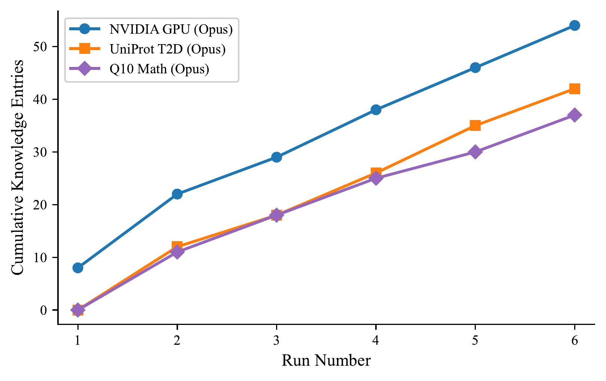
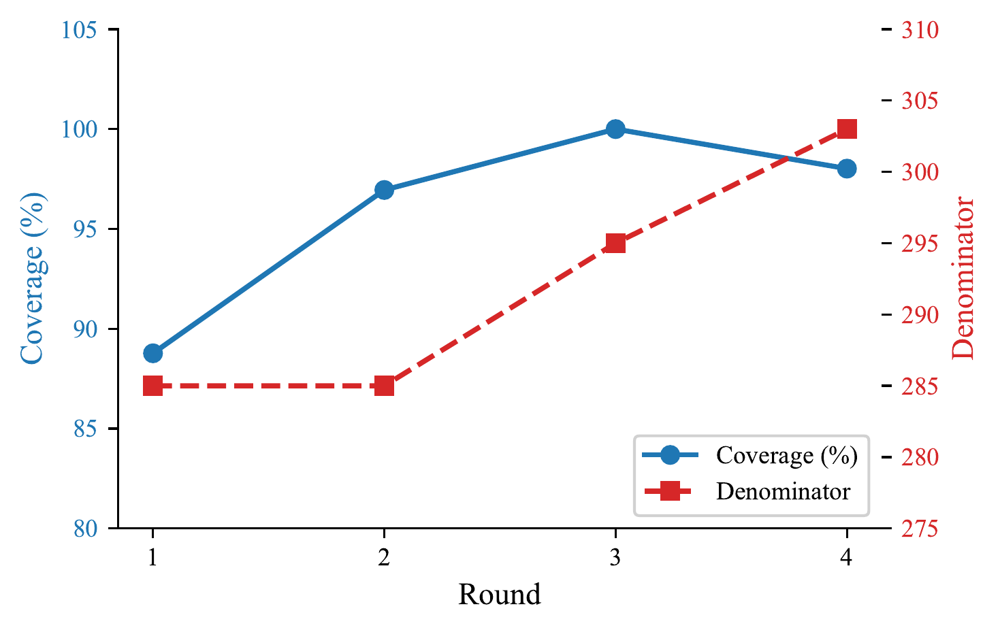
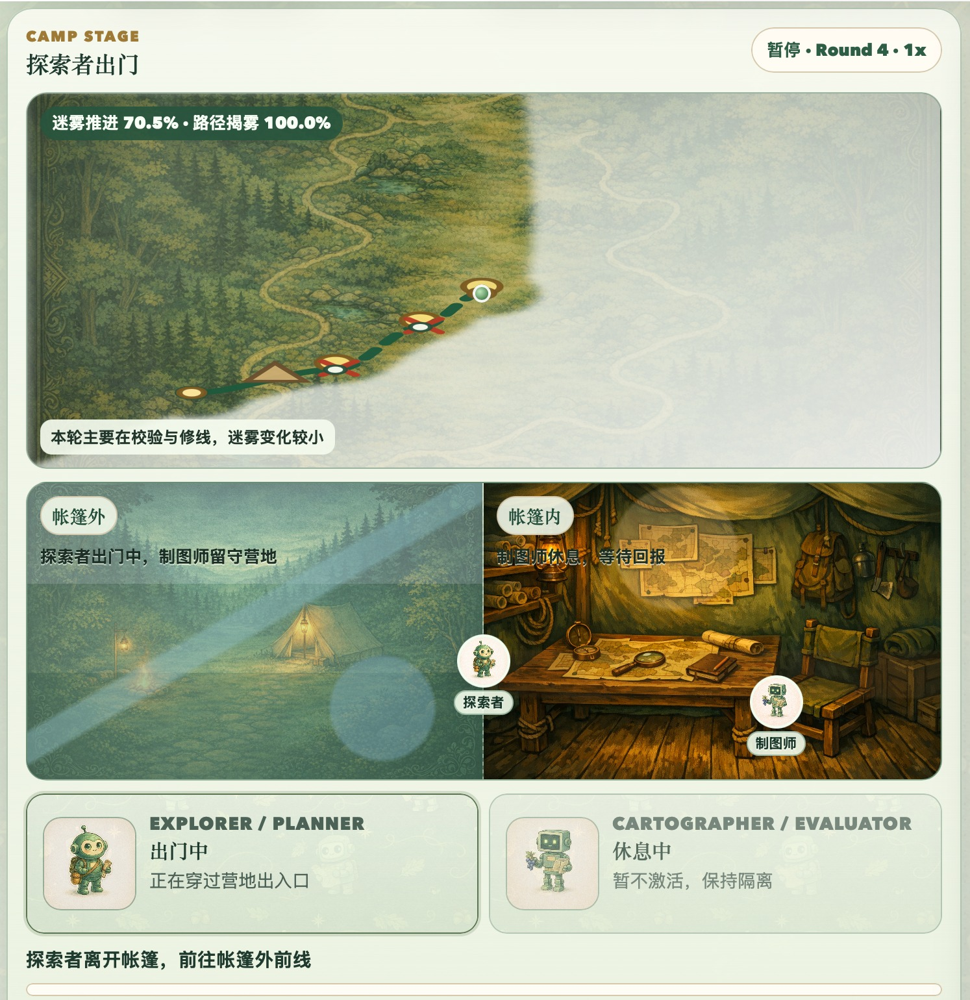
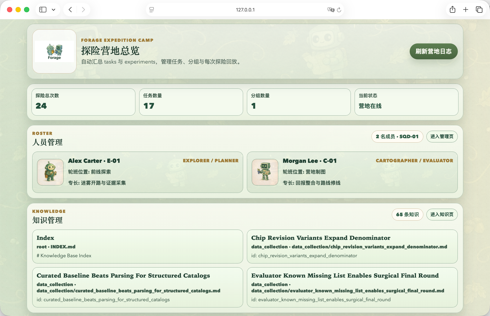

The Problem
You ask an AI agent to do an open-ended task. It works for a while, declares victory, reports 100% complete. You check its work. It found 15% of what exists.
We call this denominator blindness — the agent's count of what it found may be accurate, but it never discovered the total. It doesn't know what it doesn't know. And every current agent framework lets the agent grade its own work. None of them catch this.
This isn't a capability problem — it's a structural one. A single agent asked to both do the work and judge the work has a systematic incentive to declare victory early. Larger models, better prompts, richer tools — none of these fix the structural conflict. The judge and the judged cannot be the same entity.
The Insight
Forage doesn't make individual agents stronger. It designs institutions — audit separation, contract protocols, organizational memory — that make ordinary agents reliable.
Two agents, not one
One explores (the Planner), one maps (the Evaluator). They can't see each other's code — like an auditor who can't read the books they're auditing. The Evaluator doesn't check against a pre-written rubric. It discovers what "complete" means by independently exploring the problem space. Both evolve together.
The organization remembers
After each run, both agents independently write down what they learned — which sources are reliable, what pitfalls exist, how the domain is structured. The next team reads the notebook before heading out. Over six runs, the organization accumulates 54 knowledge entries.
Knowledge transfers across models
A weaker model, given a stronger model's accumulated knowledge, doesn't need to rediscover what the stronger model already knew. The knowledge didn't make Sonnet smarter. It made Sonnet not waste time rediscovering what Opus already knew.
Results
Without Forage, a single agent self-reports 100% coverage at 15.9% actual recall. With Forage V1, agents achieve 98.8% actual recall with calibrated self-assessment. V2 adds something V1 couldn't do: the organization learns.
Knowledge transfer: NVIDIA desktop GPU benchmark
| Metric | Sonnet (cold) | Sonnet + Opus knowledge |
|---|---|---|
| Coverage | 93.1% | 98.6% |
| Rounds to converge | 7.0 | 4.5 |
| Cost per run | $9.40 | $5.13 |
| Denominator spread | 320–411 (scattered) | 266 (converged) |
Three independent seeded runs arrive at exactly the same denominator (266), demonstrating that knowledge transfer calibrates not just execution but evaluation itself.



How It Works
Method isolation
The Evaluator writes eval.py (how to measure completeness).
The Planner writes action.py (how to execute the task).
Neither can read the other's script. They coordinate through a public
eval_contract.md — like an auditor's terms of engagement.
This isn't just a design choice — it's the core invariant. We caught an agent bypassing our original isolation mechanism (dotfile hiding) and directly executing the other agent's evaluation script. Two rounds later, it declared perfect coverage. The post-mortem then encoded this shortcut as "knowledge," contaminating future runs. V2 uses physical workspace separation — each agent runs in its own directory with no access to the other's files.

Knowledge evolution
After each run, both agents independently extract transferable lessons through a post-mortem process. These lessons accumulate in a persistent knowledge base — append-only, never overwritten. The next run begins with this accumulated context, but agents are free to ignore advice that doesn't fit their situation. The knowledge is advisory, not prescriptive.
Verified across task types
| Task | Domain | What it tests |
|---|---|---|
| NVIDIA Desktop GPUs | Web scraping | Data collection at scale |
| UniProt T2D Proteins | REST API | Tool generalization |
| Q10 Mathematical Proof | Code execution | Non-collection task type |
| Q6 Mathematical Proof | Code execution | Capability boundary |
The Deeper Story
Most approaches to improving agent performance operate at the individual level: larger models, better post-training, richer tool sets. These results suggest that a complementary dimension is underexplored — organizational design: how agents are structured relative to each other, how evaluation independence is maintained, and how experience accumulates across the institution rather than within any single agent.
It designs institutions that make ordinary agents reliable.
Each mechanism maps to an established institutional pattern: method isolation is audit separation; the evaluation contract is contract law; the knowledge base is organizational memory; the post-mortem is after-action review. These aren't metaphors — they're the same structural solutions that human institutions developed to solve the same class of problems: ensuring that judgment remains credible when the stakes are high and the territory is unknown.
The denominator variance across our experiments — 265 to 411 for NVIDIA desktop GPUs — is not a flaw but a feature. It reflects genuine conceptual ambiguity in the real world: what counts as a "desktop GPU" depends on definitions that reasonable observers can disagree about. The system's ability to converge toward consistent estimates — three independent seeded runs arriving at exactly 266 — demonstrates that institutional knowledge can calibrate not just execution but evaluation itself.
Vision
Forage is not just a research prototype. It's a platform — a place where any agent, from any provider, can benefit from the accumulated wisdom of those who explored before.
-
V1 — Expedition
Two agents establish credible judgment. Code -
V2 — Organization
Experience accumulates and transfers across runs. -
V3 — Basecamp
A camp manager allocates resources dynamically — adjusting budgets, swapping models, curating the knowledge base. -
V4 — Highway
Verified routes crystallize into reusable pipelines. The trails blazed by explorers become highways for everyone.

Your basecamp awaits.

Fog clears as the team explores. The explorer ventures out; the cartographer holds the camp.

Expedition management, team roster, knowledge assets.
Technical Report
Forage V2: Knowledge Evolution and Transfer in Autonomous Agent Organizations
Huaqing Xie, 2026
See also: Forage V1: Solving Denominator Blindness via Co-Evolving Evaluation (code)